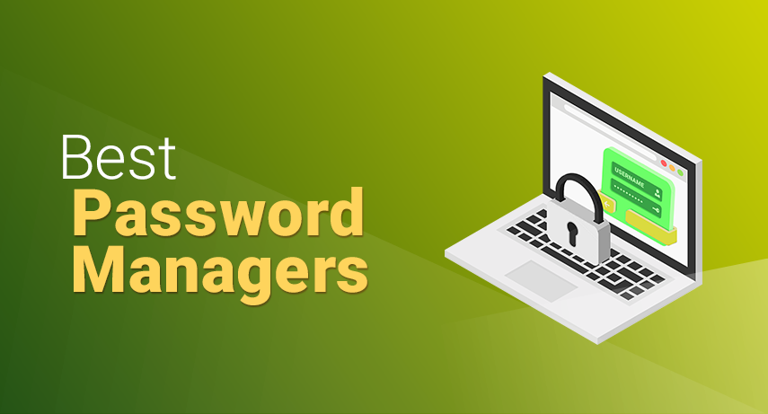
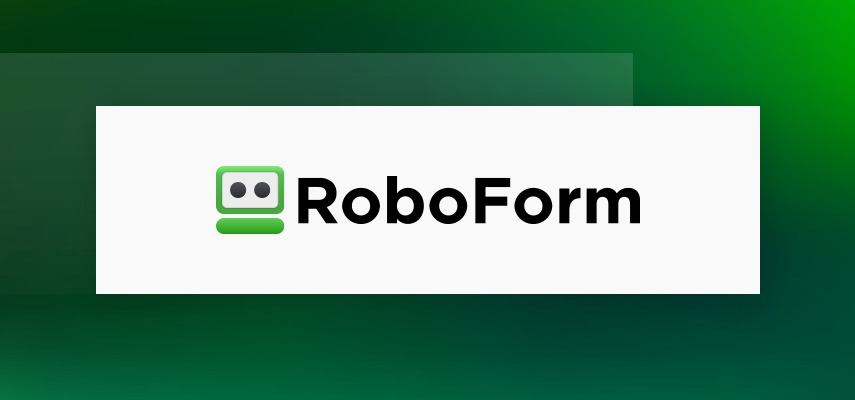
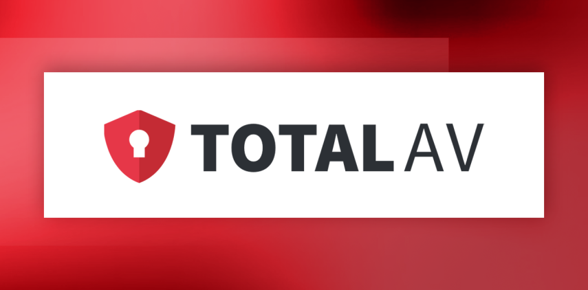
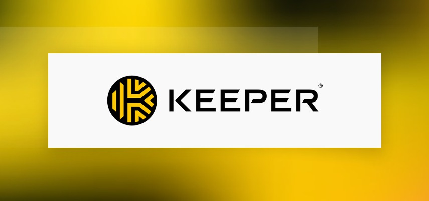

Top Password Managers
James McGill | Updated on February 8th 2024Privacy and Technology Consultant In a hurry? Here’s the top Password Manager for 2025:
We've all been there.
You're prompted to enter the password, but you're drawing a blank. You then type in 10 different variations of your last known password, but nope, you're still locked out.
You're not alone. According to a study by Digital Information World, 78% of people had to reset a password for one personal account in the last 90 days. 57% had to reset their password for a work account.
You can hardly be blamed for forgetting your password, though. After all, new research suggests that an average user now has around 100 passwords to remember. These range from the seemingly trivial like Quora, Reddit, Facebook, and Tinder to the critically important online banking, work emails, and proprietary business accounts. If these numbers seem incredulously high for you, it's likely because you do one of these things:
- You use the same password for everything.
- You're in the habit of reusing passwords.
- You rely on password chains and browser-based autofill features.
Yes, it's convenient, but it's a bad idea at a time when cybercriminals are getting smarter and smarter every day.
Here's why you should break these bad password habits now:
- It increases your device's vulnerability to password-guessing and brute force attacks.
- Recycling passwords for personal and business accounts means hackers only need to crack one password to breach the entire network.
- Hackers can use a phishing attack to retrieve your saved credentials.
- You risk jeopardizing not just your financial information but also personal data such as your photos, videos, addresses, and more.
- You're making yourself more susceptible to cyberattacks and identity theft.
Okay, I get it! So what now? Do I have to memorize all my passwords? Do I write everything down on a piece of paper and keep it locked in a safe deposit box?
Of course, not! You don't have to go through so much trouble to keep your passwords safe from prying eyes. This is where a password manager comes in. It's a software application designed to generate, store, and manage online credentials in one secure place. You can finally kiss those sticky notes goodbye!
An overview of the best Password Managers for 2025:
- 🥇 1. RoboForm — Our #1 recommendation and voted as the best password manager for 2025 - Roboform boasts advanced security features including biometrics and a data breach scanner at an unbeatable price.
- 🥈 2. Total Password — This zero-knowledge platform impresses with its multi-factor authentication options that include fingerprint and facial recognition.
- 🥉 3. Keeper Security — Keeper Security offers a wide range of features ranging from the basic to the more advanced, like dark web monitoring, emergency kit, two-factor authentication, OCR scanner, and recovery options.
- Frequently Asked Questions about Password Managers (FAQ).
What can a password manager do, and what are the benefits?
- Remember just one password for everything. A strong password usually requires symbols, punctuations, long phrases, and a mix of upper and lower-case letters. It's difficult to remember if you have ten passwords or more. Using a password manager, you only need to remember one! The password manager stores all of your passwords in an encrypted digital vault, protected by a master password.
- Generate random passwords. Most password managers come with a password generator that helps generate random passwords that are far stronger than what you can come up with off the top of your head. This prevents you from repeating passwords you've used in the past or creating weak passwords that include your pet's name, birthdays, a part of your home address, and more.
- Fast access to passwords and logins. No more fumbling with login screens and password recovery. Password managers let you type a single password and then have each access point automatically populated with a username and password. Some also have an auto-fill feature for quick and easy login to your favorite websites.
- It works across multiple devices. Depending on which service you choose, password managers work on various devices and platforms. Changes automatically sync across your preferred devices, so you'll have access to your logins no matter where you are.
- Store more than just passwords. Most password managers go beyond merely storing your logins and passwords. It can also store answers to password recovery questions, credit card information, membership cards, medical prescriptions, shopping profiles, notes, and other sensitive information.
- It helps boost cybersecurity with usage reports, activity logs, and dark web monitoring. Password managers can also alert you to potential security breaches. Keeper Security, for example, comes with a business dark web monitoring tool that scans for passwords that may have been exposed or compromised. Dashlane also features a dynamic Password Health dashboard that alerts users for weak or passwords that have been reused. Roboform is a password manager that offers a two-step verification as an added layer of security.
- Securely manage and share passwords. For those situations when multiple people need access to a single account (family, teams, and enterprises), a password manager provides an option to control who has access to passwords, manage, or change passwords when necessary.
- Manage what happens to your digital accounts after you die. Some password managers feature emergency access that lets you specify designated contacts that can request access to your account in case of an emergency, tragic event, or death.
Great! So now you know what a password manager can do, let’s take an in-depth look at the top password managers in 2025:
1. RoboForm — Best Budget Option

Roboform is owned by a privately-held company, Siber Systems, which is located in Fairfax, Virginia. The company was founded in 1998 and launched Roboform just a year later, making it one of the oldest password managers in the market. Roboform stores user's passwords in cloud servers, protected with AES-256 bit encryption with PBKDF2 SHA-256. This, along with two-factor authentication (2FA) and vault auditing tools, means that you're getting the same level of security usually reserved for banks and militaries.
Other than keeping your passwords as secure as possible, Roboform is big on convenience and practicality. Your passwords are in the cloud, so it's backed up and sync all across your browsers and devices - Windows, Mac, iOS, Android, and more. Besides getting access to your login anytime, anywhere, you can also complete time-consuming web forms with a click of a button using the form filler feature.
Roboform satisfies our criteria in choosing a reliable password manager in 2025. They have a strong password generator, emergency access, and 24/7 customer assistance.
All in all, we really liked Roboform. The interface is intuitive and easy to use despite all the advanced features. The sharing and sending feature worked like a charm, and we had no trouble sharing passwords, folders, and notes to other Roboform users in the office. Businesses, in particular, will love the centralized administrator control and emergency access features. Offering a 30-day money-back guarantee, Roboform is an affordable yet powerful password management solution.
Get RoboForm - Keep Your Passwords Secure!
2. Total Password — Best Overall Password + Security Package

TotalAV has been the go-to antivirus program for both beginners and advanced users, and their companion password manager, Password Vault, is just as feature packed, yet easy to use. Your login information can be stored, sorted, and retrieved in a safe environment. It also has the ability to create strong passwords for you, making it so that your passwords are nearly impossible to crack. These passwords are then stored in an encrypted vault, accessible only with your master password. By locking them all behind one master password, you can avoid having to write passwords on sticky notes, on your phone, or on random scraps of paper. After all, there’s only one password to remember!
TotalAV’s Password Vault also offers One-Click Login and Browser Integration, so your time on the web isn’t wasted fumbling with passwords or filling in web forms. The browser links to your vault, allowing you to create and save new passwords, log into an existing account, or fill in your personal details in a single click, regardless of the device you're using. This helps speed up tasks for apps and websites!
We loved TotalAV Password Vault’s basic and advanced features, especially its browser integration and single-click login. But do you know what's best? It comes in a fantastic value package that includes a password manager, top-rated real-time antivirus protection, ransomware protection, system tune-up tools and more. For as little as $19 a year, you can access everything in this list by clicking the link below.
Get Total Password - Keep Your Passwords Secure!
3. Keeper Security — Best Stand-Alone Password Manager

According to Keeper, they're "fanatical about data protection and password manager", and it's not just a fancy slogan. This claim is backed by an impressive security architecture, starting with their
zero-trust and zero-knowledge policies. Keeper also encrypts your vault with AES-256 — the
same algorithm used by the NSA and other U.S. government organizations, including the military. You'll also get
multi-factor authentication, biometric login, FIDO2 hardware security keys, and Keeper DNA. Keeper understands that they're dealing with our most sensitive information, and they are utilizing best-in-class security to get the job done.
When it comes to actual password management, Keeper covers the basics pretty well with standard features like password generator, autofill, emergency access, and file storage. But, the unique extras are proving to be game-changers. The trash bin lets you retrieve accidentally deleted passwords while BreachWatch continuously searches the dark web for login credentials that may have been hacked, stolen, or leaked. Of course, dark web monitoring is nothing new, but Keeper takes it up a notch with a database of over a billion records. And then, there's the self-destruct feature. After five failed attempts to break in, Keeper will wipe out all locally stored files. If you ever lose your phone or it gets stolen, you won't have to worry about your photos or videos circulating online without your permission.
We were impressed by Keeper's security and password management tools, but what we love the most is that everything is laid out on a user-friendly interface. If you're looking for a password manager with advanced security features that don't overwhelm you, we can't recommend Keeper highly enough.
Get Keeper Security - Keep Your Passwords Secure!
How we tested the Top Password Manager Brands for 2025?
With so many brands to choose from, choosing the best password manager can be a confusing and overwhelming experience. Our experts will help narrow down your options with carefully curated recommendations - gathered after months of carefully testing and ranking dozens of different password manager services. Before a brand makes it into our Top 10 list, it must have the following qualities or features:
- Solid security with end-to-end encryption and multi-factor authentication
- User-friendly with various recovery options and a web monitoring system
- Must have a strong password generator so you won't have to use important dates, pet names, family member's names, and other obvious words in your passwords ever again
- Offers convenient autofill login and automatic saving features
- Supports multiple devices and platforms
- Audited by independent researchers
- Ability to grant another user emergency access to your passwords should anything happen to you
Top Password Managers - Frequently Asked Questions (FAQ)
🔑 What is a password manager?
A password manager is a software application designed to generate complex passwords and store these in a secure vault. This vault can be unlocked with a single master password and other authentication methods like 2FA, fingerprint, or facial recognition, depending on the service you choose.
💭 What are the different types of password managers?
There are 3 common types of password managers, the most popular of which are the cloud-based ones primarily because of the convenience it offers. Since your passwords are stored on the service provider's network, you can access your passwords from any device, anywhere, anytime. Then there are the desktop-based password managers, which store your data locally, on one of your devices. While this can be a hacker-proof option, the downside is that you lose all of the data if you lost your device. On the other hand, browser-based password managers let you store your login credentials in browsers like Chrome, Internet Explorer, and Firefox.
🔒 Are password managers safe?
Yes, using a password manager is the safest way to keep track of your passwords. It's definitely a lot better than writing them on sticky notes, reusing passwords, or using your personal information in a password just so it's easier to remember. With a password manager, these passwords are stored in an encrypted vault - away from the prying eyes of cybercriminals. Some services even utilize "zero-knowledge" protocol and multi-factor authentication as an added layer of security.
💰 Are there any free password managers?
Of course, there is always free stuff around, including password managers. Personally, though, I wouldn't hand my passwords, login credentials, and other sensitive information over to a free service. Many free password managers are actually just spyware designed to steal your passwords or capture your credit card and banking information. Some premium managers offer a legit free trial, but valuable features like emergency access and multi-factor authentication are often locked away behind a paywall.
Transparency and Trust: The aim of this website is to help you find the perfect software for your needs in an easy-to-view comparison list. You can read more about how we review and about our background in the About Us section of this website. Software.fish does not feature all of the software available in the market, we cherry-pick what we consider to be the leaders in each vertical. We try to keep this site updated and fresh, but cannot guarantee the accuracy of the information as well as the prices featured at all times. All prices quoted on this site are based on USD so there could be slight discrepancies due to currency fluctuations. Although the site is free to use, we do earn commissions from the software companies that we have partnered with. If you click on one of our links and then make a purchase, we will get paid by that company. This has an impact on the ranking, score, and order in which the software is presented in our list and elsewhere throughout the site. Software listings on this page DO NOT imply endorsement.